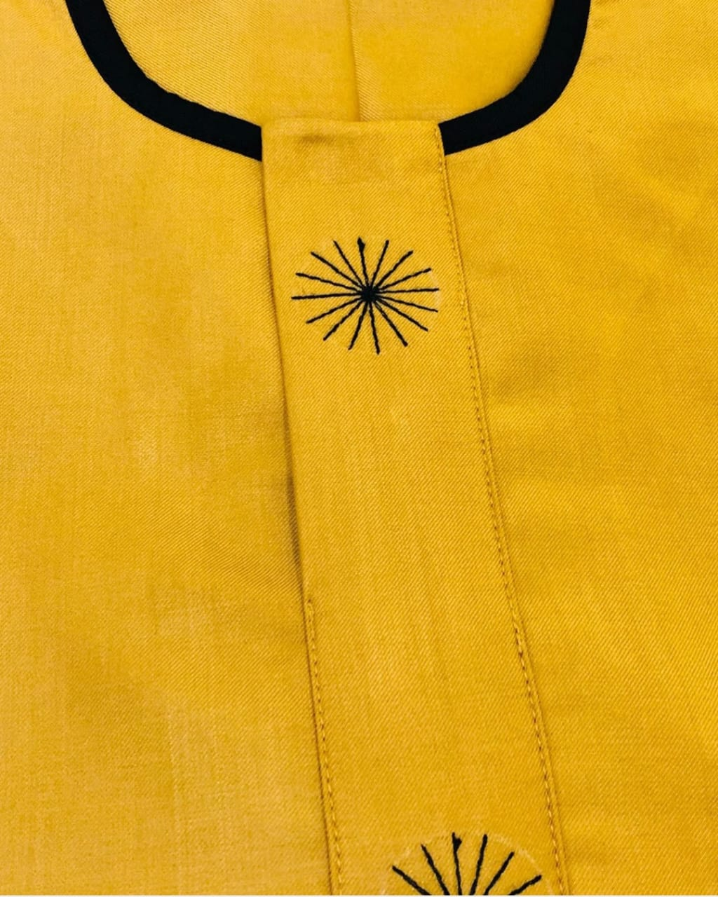
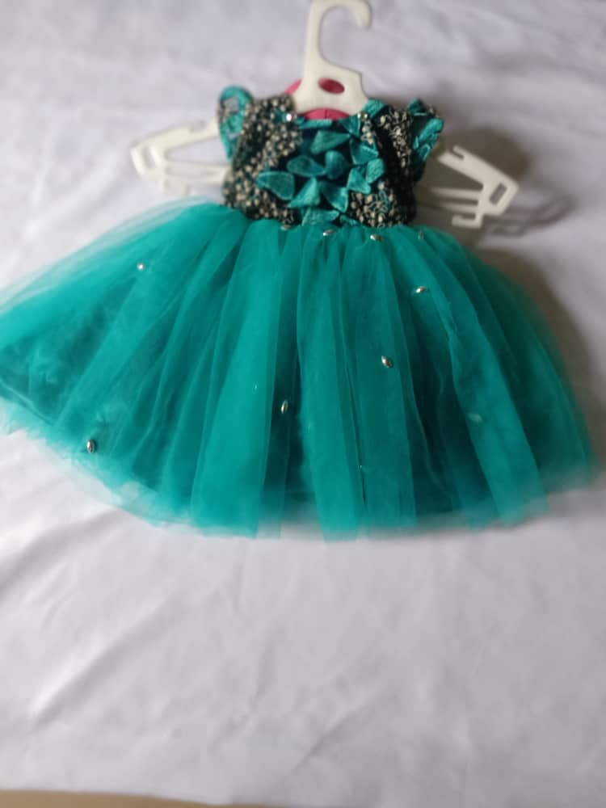

At StyleSphere Creations, we transcend the conventional fashion landscape – we are not merely a brand, but architects of individuality. Our meticulous craftsmanship and delivery of innovative, trend-setting fashion designs aim to empower you, providing a canvas for expressing your unique style. We're on a mission to cultivate confidence and elegance in every aspect of your life. With an unwavering commitment to quality craftsmanship and a profound understanding of evolving trends, StyleSphere strives to be at the forefront of the fashion industry. We are devoted to offering customers exceptional and distinctive wardrobe choices that genuinely mirror the essence of contemporary style.
StyleSphere Creations is dedicated to curating and delivering cutting-edge fashion designs, empowering individuals to showcase their unique style and exude confidence and elegance. Committed to quality craftsmanship and staying abreast of evolving trends, we aspire to be a leading force in the fashion industry, offering exceptional wardrobe choices that epitomize contemporary style.
Services
Our pride lies in the transformative power of fashion. At StyleSphere Creations, we go beyond the ordinary, meticulously crafting classic and uniquely designed dresses for men, women, and kids. Each creation is a work of art, a reflection of our dedication to timeless style, ensuring you stand out with unparalleled elegance. Whether it's a sophisticated men's suit, an elegant women's gown, or an adorable kids' ensemble, our services cater to diverse tastes and occasions.
Men's Dresses
Our men's collection marries sophistication with contemporary flair. From tailored suits that exude elegance to casual ensembles that redefine relaxed style, our range caters to diverse tastes and occasions. Each piece is crafted with precision, ensuring a perfect blend of comfort and style.
Women's Dresses
For women who appreciate the artistry of fashion, our collection is a visual symphony. Explore elegant gowns, chic dresses, and versatile outfits that seamlessly transition from day to night. Each design reflects a commitment to celebrating the uniqueness of every woman.
----What We have Done----
Our Portfolio

Men's Dresses
Our men's collection marries sophistication with contemporary flair. From tailored suits that exude elegance to casual ensembles that redefine relaxed style, our range caters to diverse tastes and occasions. Each piece is crafted with precision, ensuring a perfect blend of comfort and style.

Kids' Dresses
Even the youngest members of your family can showcase their style with our adorable kids' collection. From playful patterns to charming ensembles, our designs ensure that your little ones stand out with unmatched cuteness. Crafted with comfort in mind, our kids' dresses are perfect for every occasion, creating lasting memories. .

Women's Dresses
Crafting with Confidence, Curating Elegance ..........
For women who appreciate the artistry of fashion, our collection is a visual symphony. Explore elegant gowns, chic dresses, and versatile outfits that seamlessly transition from day to night. Each design reflects a commitment to celebrating the uniqueness of every woman.
Our diverse range includes ready-made Ankara, Aso oke, Adire, and more, allowing you to express your personality through a variety of distinctive fashion choices.